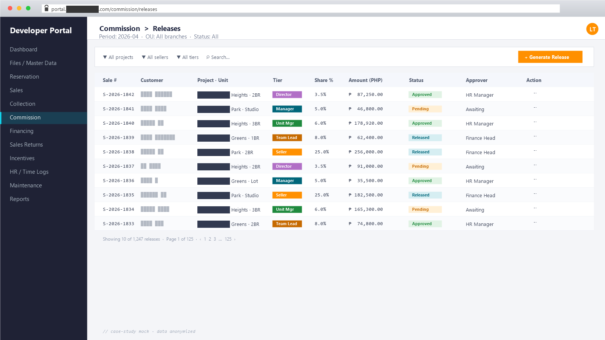

Real-Estate Developer Portal
Operations & commission ops on Vue 3 + Laravel 11
A full-stack platform that runs a real-estate developer — projects, units, reservations, sales (equity + amortization), in-house financing, commission, collection, sales returns, assumed units — with a hierarchical seller force (Directors → Managers → Unit Managers → Team Leaders → Salespersons / Brokers) and OU-scoped role-based access.
Shared Excel files for inventory + email threads for leads + manual commission across a 5-tier sales hierarchy.
One source of truth with role-aware access down to the salesperson level.
Excel-macro SOA generation; reminder notices typed by hand from templates.
Programmatic SOA + reminder + notice generation; templates live in code.
No single management view across reservations, equity, amortization, and collections.
~102 Vue views consolidated by domain; dashboards surface what’s overdue, expiring, or pending.
What it is
A web portal that runs the full developer lifecycle for a real-estate client — from reservation through sales, equity, amortization (including in-house financing), commission ledgers + receipts + releases, collection receipts, and final SOA generation — with a multi-tier seller hierarchy, project management with title + COO monitoring, and operations tooling for time logs, leaves, memos, payslips, and expenses.
Live in production behind an access-gated tenant portal (client under NDA).
Vue 3 (Vue CLI) + Bootstrap Vue 3 + AG Grid Enterprise on the frontend, Laravel 11 +
MySQL + JWT (tymon/jwt-auth) on the backend. ~65 Eloquent
models, ~67 controllers, ~99 migrations,
and ~102 Vue views organized by domain.
The bottleneck
Before the portal, the developer’s day-to-day ran on a tangle of:
- Shared Excel files for inventory and pricing — with stale rows nobody owned.
- Email threads for assigning leads, escalating approvals, and chasing collections.
- Manual commission computations across a multi-tier sales hierarchy that varied per project and per agreement.
- In-house amortization schedules tracked separately from the sale and the SOA, so reconciliation was a manual cross-reference.
- No single dashboard for management to see which reservations are about to expire, which equity payments are overdue, or which titles are still pending transfer.
- Payment reminders and notices of cancellation generated by hand from templates.
The team needed one source of truth for every stage of the unit lifecycle, with role-aware access down to the salesperson level, and a way to generate reminders, notices, and SOAs programmatically instead of from Excel macros.
How I broke it down
- Domain modelling first. Talked through real workflows with the team before writing schema — reservation rules, equity vs. amortization, in-house financing terms, commission tiers per seller level, sales returns, assumed-unit transfers, title and COO monitoring workflow.
- Subdomain folder layout on both sides. Models grouped under
app/Models/{Sales, Collection, Commission, Financing, Reservation, SellerManagement, ProjectManagement, AssumedUnit, SalesReturn, Files, Maintenance, Expense, Incentive, ...}. Vue views mirror it (src/views/{sales, collection, commission, financing, …}) so backend and frontend stay readable side by side. - CASL on the frontend, OU-scoped permissions on the backend.
Permissions defined in
src/helpers/abilities.js, loaded from the API per user, cached in Vuex + localStorage, and re-checked on every route guard. MultiplebeforeEachhooks validate session, refresh permissions, and apply OU access. - AG Grid Enterprise for tables. Filterable, server-side paginated, exportable. Same look across every domain — no re-inventing the wheel for each view.
- Background reminders + cron-driven nudges. Payment-reminder and
clock-out-reminder jobs run from Laravel’s scheduler with production
runbooks (the project ships dedicated
PAYMENT_REMINDER_PRODUCTION_SETUP.mdandCLOCK_OUT_REMINDER_IMPLEMENTATION.mdnext to the code). - JWT auth + Vuex-persisted state. Bearer tokens stored in localStorage, refreshed transparently, and state hydrated on reload for seamless page-jump UX.
What I built
Domain modules shipped:
- Files / Master Data — projects, units, customers, agents, realty firms, payment schemes, collectors. The canonical entities every other module references.
- Reservation — reserve a unit for a customer, with expiration windows and price-adjustment handling.
- Sales — convert reservation to sale; track equity and
amortization on the same record (
Sales/Amortization,Sales/Equity,Sales/Receivable). - Financing — in-house financing terms +
InhouseAmortizationschedules tied to the sale. - Collection — collection receipts, customer ledgers,
final SOA generation, automated
PaymentReminderLog, andNoticeOfCancellationwhen terms slip. - Commission — ledgers, receipts, releases. Calculation tiered by seller level and agreement type.
- Seller Management — the five-tier hierarchy: Directors → Managers → Unit Managers → Team Leaders → Salespersons / Brokers.
- Project Management — gatekeepers, title-monitoring, COO monitoring with workflow state.
- Sales Return + Assumed Unit — unit buybacks and contract-of-sale transfers between buyers.
- Incentive — incentive management and ledgers on top of the commission engine.
- Expense — per-OU expense tracking with categories, particulars, and payee linkage.
- HR-lite — time logs (with clock-out reminders), leave requests, memos, payslips, downloadable forms.
- Maintenance — banks, designations, positions, departments, provinces, unit types, land types, expense categories, payees, price-adjustment handlers, property placements, email recipients. The “configure the system” surface.
- User Management + RBAC — users, roles, modules, menus, per-OU access control, CASL abilities, dynamic menu rendering per permission.

Example: commission release on a sale — one of the harder pieces because the seller hierarchy means a single sale generates entries for every tier above the closing salesperson, each with its own percent and ledger destination:
class CommissionReleaseService { public function release(Sales $sale, CollectionReceipt $receipt): Collection { return $sale->sellerHierarchy()->withTiers()->get() ->map(fn (Seller $s) => CommissionReceipt::create([ 'sales_id' => $sale->id, 'receipt_id' => $receipt->id, 'seller_id' => $s->id, 'tier' => $s->tier, // director | manager | unit_mgr | team_leader | seller 'percent' => $s->commission_percent, 'amount' => round($receipt->amount * $s->commission_percent / 100, 2), 'ou_id' => $sale->ou_id, 'released_at' => null, // stamped by ReleaseController when approved ])); } }
Tech
- Frontend: Vue 3 (Vue CLI), Bootstrap Vue 3, Vue Router, Vuex 4 (persisted to localStorage), CASL for RBAC, AG Grid Enterprise, Flatpickr, @vueform/multiselect, ApexCharts + ECharts, FullCalendar, Vue-Leaflet maps, CKEditor, FilePond, file-saver, AOS, Vuelidate, axios.
- Backend: Laravel 11, MySQL, JWT auth (
tymon/jwt-auth), Laravel Pint for formatting. Background jobs for payment reminders + clock-out reminders via Laravel scheduler. - Database tooling:
kitloong/laravel-migrations-generatorfor generating migrations from an existing schema,orangehill/iseedfor seeding from existing data. - Domain scope: ~65 Eloquent models · ~67 controllers · ~99 migrations on the API; ~102 Vue views across 19 domain folders on the UI.
- Tooling: VS Code · Claude Code · Git · Postman · Yarn · Composer.
- Deployment: Access-gated tenant portal (URL under NDA).
Results
The platform replaced a tangle of spreadsheets and email threads with one auditable source of truth covering the entire developer lifecycle — from a reservation coming in to the final SOA going out, with commission, financing, and collection all living on the same ledger. Payment reminders and notices of cancellation now generate from the data instead of being typed up. The seller hierarchy means every sale automatically populates commission entries for the five tiers above the closing salesperson, with per-receipt release tracking.
Live in production behind an access-gated tenant portal. Specific business figures (volumes, days-saved, error reduction) stay with the client; happy to discuss specifics on request.
What I’d do again — and differently
Worked well:
- Modelling the full unit lifecycle as explicit nouns (Reservation → Sales → Equity → Amortization → CollectionReceipt → CommissionReceipt → Release) instead of cramming it into one mega-table. Every edge case had a place to live, and reports built themselves out of joins.
- AG Grid Enterprise paid for itself. Sortable, filterable, server-paginated, exportable tables — same UX across all 102 views — meant the team learned one table interaction model.
- CASL on the frontend + OU permissions on the backend. Dynamic menus and route guards driven by the same permission set the backend enforces. No drift between “what the UI shows” and “what the API allows”.
- Reminders and notices as scheduled jobs. Letting Laravel’s scheduler send out payment reminders, clock-out nudges, and cancellation notices means the operations team stopped maintaining a manual cadence.
Would tighten:
- Use a battle-tested RBAC package next time. Building the permission · role · OU · menu-access matrix from scratch was thorough but expensive. Spatie’s Laravel-Permission would have covered 80% in a day, leaving only the OU-scoping to write.
- Seed data + staging earlier. The commission and amortization rules have many edge cases that only surface with realistic data. Invest in seed data + a staging environment before the first feature ships, not after.
- Sanity-check queries on the admin dashboard from day one. Cheap to add upfront, expensive to retrofit once reports are live and people have started trusting the numbers.
- Vue CLI → Vite migration. The Velzon template ships on Vue CLI; the rebuild loop is slow at 102+ views. Future projects start on Vite.